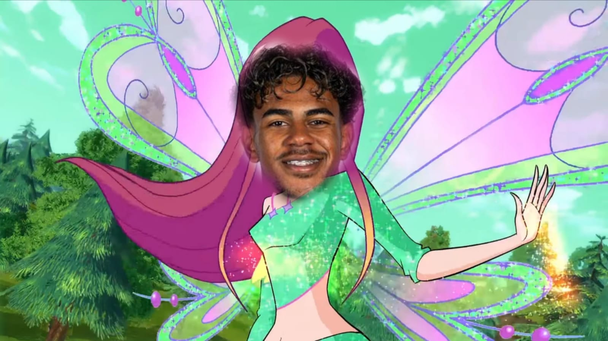

Un día La Niña Mala estaba caminando por las calles de Barcelona. De un momento a otro, hubo una gran explosión frente a ella en un edicifio de La Rambla. Habían sido las Trix, estudiantes de Torre de Nubes. Mientras que el barrio se consumía en un gran caos, por el cielo aparecieron unas sombras máginas, que conforme se acercaban a la escena, su identidad quedaba más clara. ¡Eran las Winx Club! Estudiantes de Alfea, que llegaron tan pronto gracias a que se encontraban descansando después de un día de compras en la playa de la Barceloneta. La Niña se quedó helada, sin saber qué hacer e hipnotizada por la gran guerra de la que estaba siendo testigo.
Una vez fueron todas conscientes de la presencia de Niña Mala, comenzó una guerra suave de manipulación para la incorporación de esta gran futbolista a sus respectivas escuelas.
Esta imagen le pareció extremadamente similar a la temporada en la que los clubs pujan por su incoporación a la plantilla, como:
Con sus 19 años de edad, se graduó de la ESO con 16 mientras que se preparaba para jugar con la Eurocopa representando a la selección española, la cual finalmente ganó. Una vez se cruzaron por su camino las Winx, se enamoró perdidamente de la magia de hadas y se dejó la carrera como futbolista en la cúspide de esta.
Gracias a la gran riqueza que le dejó su carrera profesional como futbolista, se podía permitir la exploración de las islas Maldivas continuamente, un estilo de vida muy recurrente entre millonarios junto a la contaminación por el uso reiterado de jets privados. Además, era un gran seguidor de tendencias de baile de Tik Tok. Debido a su desarrollo como persona en la escuela Alfea, ahora tiene la capacidad de transformar con magia balones de fútbol en bombas que activa una vez les pega una patada hacia el objetivo. Junto a sus compañeras y amigas, ha abierto su abanico de aficiones hacia combatir el mal a través del poder de la amistad y las alas brillantes.
Previamente, La Niña, hubiera contestado sin vacilación su objetivo de conseguir el Balón de Oro y ganar más títulos junto a su equipo como la Champions League, La Liga o más mundiales. Actualmente se dedica en cuerpo y alma a la progresión de sus poderes mágicos para convertirse en Hada Guardiana del Raval y protector de la Dimensión Mágica Marroquí en el Reino de Barcelona.
Un poder conlleva poder lucrarse de otros. A través del avance de sus técnicas mágicas, La Niña, junto a
Esto conlleva una adaptación del diálogo que en la serie en la que aparecen es más extenso y más entendible, es decir, masticado para su audiencia compuesta por preadolescentes. Aquí propongo una guía con lo fundamental para usar el personaje de Mala en estos juegos.
aparta-aparta-apartame-desaparescoejecuta-baile Para utilizar esto es muy sencillo: se pulsa a Ctrl + E / F / Q respectivamente para lanzar esos ataques/estrategias del personaje.
¡ATENCIÓN! Esta historia no es real, pero es una fantasía divina.
